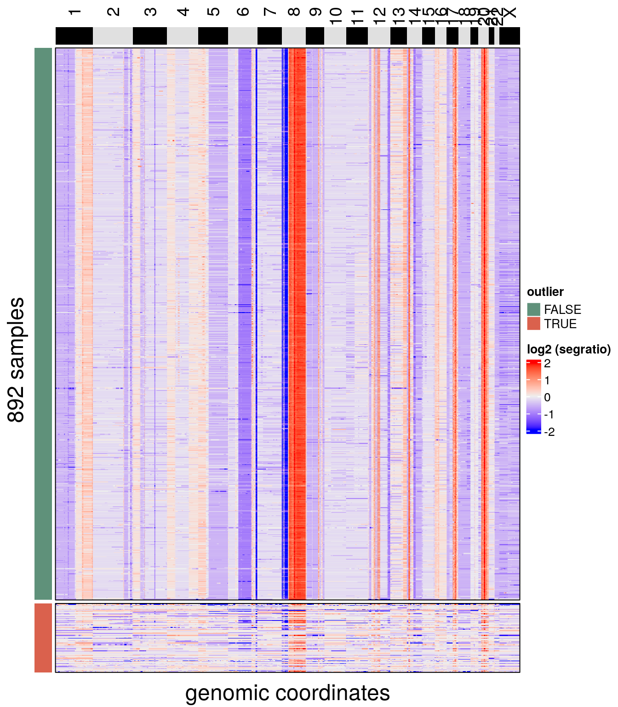
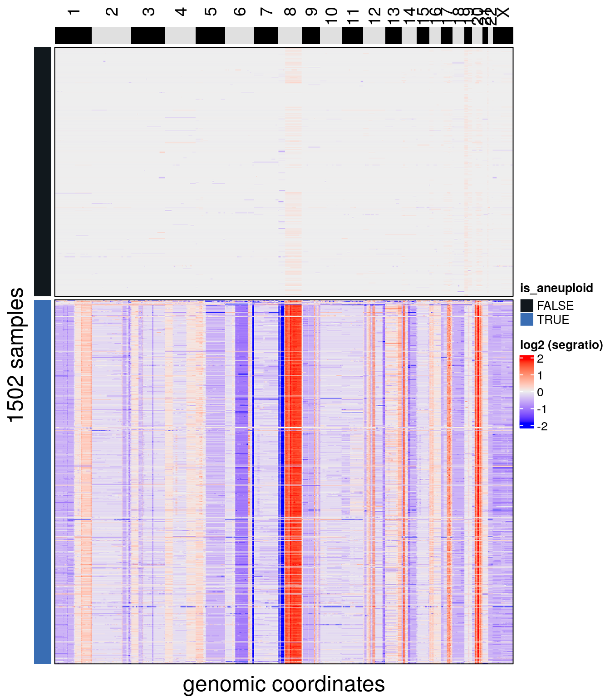

4 QC module
CopyKit QC Module consists of 3 main functions: 1) runMetrics(), 2) filterCells() and 3) findNormalCells().
4.1 runMetrics()
runMetrics() is used to add basic quality control information to the metadata of the CopyKit object. It will return information on the overdispersion on the datasets and the number of breakpoints for each single-cell.
## Calculating RMSE## Counting breakpoints.## Done.The resulting information can be seen at the metadata with:
## DataFrame with 782 rows and 11 columns
## sample reads_assigned_bins reads_unmapped reads_duplicates
## <character> <integer> <integer> <integer>
## TN28_2_S1_C10_S1930_L006_R1_001 TN28_2_S1_C10_S1930_L006_R1_001 840325 31177 125862
## TN28_2_S1_C10_S19300_L006_R1_001 TN28_2_S1_C10_S19300_L006_R1_001 772672 25524 103608
## TN28_2_S1_C100_S2020_L006_R1_001 TN28_2_S1_C100_S2020_L006_R1_001 693135 23270 83325
## TN28_2_S1_C100_S20200_L006_R1_001 TN28_2_S1_C100_S20200_L006_R1_001 633810 19125 66229
## TN28_2_S1_C101_S2021_L006_R1_001 TN28_2_S1_C101_S2021_L006_R1_001 742324 27998 100567
## ... ... ... ... ...
## TN28_3_S1_C111_S24150_L007_R1_001 TN28_3_S1_C111_S24150_L007_R1_001 727963 21808 84577
## TN28_3_S1_C112_S2416_L007_R1_001 TN28_3_S1_C112_S2416_L007_R1_001 844766 30264 150762
## TN28_3_S1_C112_S24160_L007_R1_001 TN28_3_S1_C112_S24160_L007_R1_001 744053 23087 97090
## TN28_3_S1_C114_S2418_L007_R1_001 TN28_3_S1_C114_S2418_L007_R1_001 688956 22883 94968
## TN28_3_S1_C114_S24180_L007_R1_001 TN28_3_S1_C114_S24180_L007_R1_001 611706 17910 61896
## reads_multimapped reads_unassigned reads_ambiguous reads_total percentage_duplicates
## <integer> <integer> <integer> <numeric> <numeric>
## TN28_2_S1_C10_S1930_L006_R1_001 0 251124 171 1248659 0.1
## TN28_2_S1_C10_S19300_L006_R1_001 0 229148 159 1131111 0.09
## TN28_2_S1_C100_S2020_L006_R1_001 0 218355 141 1018226 0.08
## TN28_2_S1_C100_S20200_L006_R1_001 0 198661 156 917981 0.07
## TN28_2_S1_C101_S2021_L006_R1_001 0 217576 155 1088620 0.09
## ... ... ... ... ... ...
## TN28_3_S1_C111_S24150_L007_R1_001 0 208928 162 1043438 0.08
## TN28_3_S1_C112_S2416_L007_R1_001 0 249482 196 1275470 0.12
## TN28_3_S1_C112_S24160_L007_R1_001 0 217770 158 1082158 0.09
## TN28_3_S1_C114_S2418_L007_R1_001 0 201483 137 1008427 0.09
## TN28_3_S1_C114_S24180_L007_R1_001 0 177354 118 868984 0.07
## rmse breakpoint_count
## <numeric> <numeric>
## TN28_2_S1_C10_S1930_L006_R1_001 0.162557530250304 34
## TN28_2_S1_C10_S19300_L006_R1_001 0.167298889259749 36
## TN28_2_S1_C100_S2020_L006_R1_001 0.132508665229758 0
## TN28_2_S1_C100_S20200_L006_R1_001 0.137765520470889 2
## TN28_2_S1_C101_S2021_L006_R1_001 0.13896682656001 37
## ... ... ...
## TN28_3_S1_C111_S24150_L007_R1_001 0.137535442036682 44
## TN28_3_S1_C112_S2416_L007_R1_001 0.133106294791448 60
## TN28_3_S1_C112_S24160_L007_R1_001 0.139080900295883 55
## TN28_3_S1_C114_S2418_L007_R1_001 0.162255320465384 67
## TN28_3_S1_C114_S24180_L007_R1_001 0.169867880038563 624.2 filterCells()
filterCells() removes low-quality cells according to a defined resolution threshold. Cells with correlation smaller than the mean of its k-nearest neighbors are defined as noisy samples and this information, as well as the correlation value, is added to the scCNA object metadata.
## Calculating correlation matrix.## Adding information to metadata. Access with SummarizedExperiment::colData(scCNA).## Done.The default resolution threshold is 0.9 and it can be adjusted accordingly to user needs with the argument ‘resolution’.
filterCells() adds a column to the metadata called ‘filtered’ marking cells that should be removed or kept.
After filtering the function plotHeatmap() from the visualization module can be used to visualize the results from filterCells() with the argument label set to ‘filtered’. To make visualization easier, rows can also be split according to elements of the metadata with the argument row_split.
## Ordering by consensus requires cluster information.
## Switching to hclust## No distance matrix detected in the scCNA object.## Calculating distance matrix with metric: euclidean## Using 48 cores.## Access distance matrix with copykit::distMat()## Done.
If satisfied with the filtering results, the CopyKit object can be subset as any other R object.
4.3 findNormalCells()
It is common for datasets to contain normal cells with flat profiles mixed in with the aneuploidy cells from a tumor that is being profiled. findNormalCells() performs a sample-wise calculation of the segment ratios coefficient of variation. By default findNormalCells() tries to automatically identify the resolution threshold by fitting a normal mixture model to the distribution of coefficient of variation from all samples. To increase the sensitivity of the model, findNormalCells also simulate the expected coefficient of variation. Lastly, findNormalCells() add the resulting information to the metadata of the CopyKit object in a column named ‘is_normal’.
## number of iterations= 5## Copykit detected 6 that are possibly normal cells using a resolution of: 0.051## Done. Information was added to metadata column 'is_normal'.plotHeatmap() can again be used to visualize the results from findNormalCells()
## Ordering by consensus requires cluster information.
## Switching to hclust## No distance matrix detected in the scCNA object.## Calculating distance matrix with metric: euclidean## Using 48 cores.## Access distance matrix with copykit::distMat()## Done.
The object can be subsetted in the same way as with filterCells()
Your dataset should be ready to proceed with the analysis.